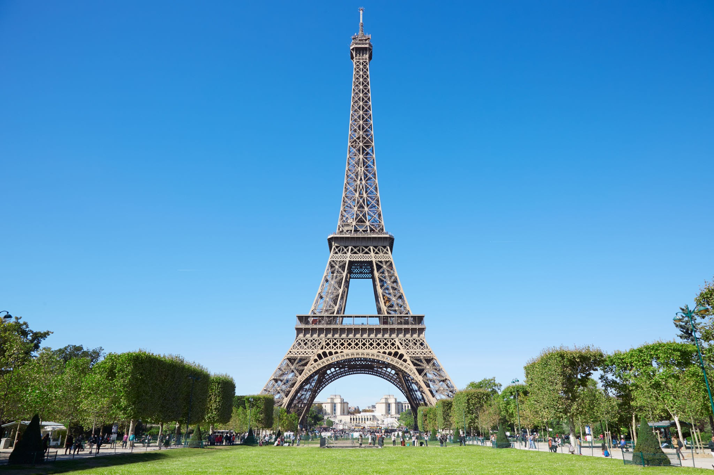
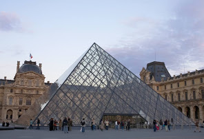
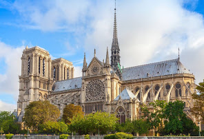
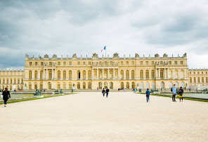
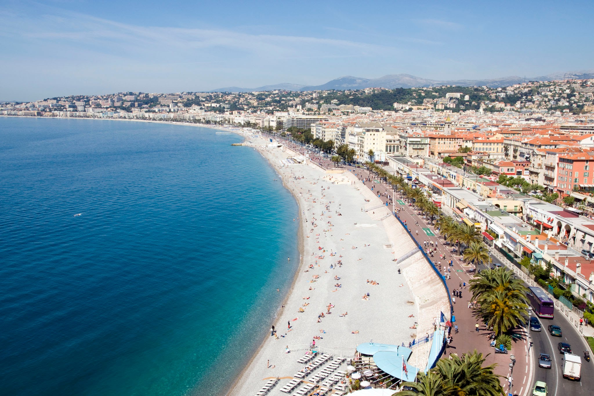

Conheça mais sobre a França
por João Figueiredo
Pontos turisticos
- Torre Eiffel 
- Museu do Louvre 
- Catedral de Notre-Dame 
- Palácio de Versalhes 
- Costa Azul 
A Torre Eiffel é uma torre treliça de ferro do século XIX localizada no Champ de Mars, em Paris, a qual se tornou um ícone mundial da França. A torre, que é o edifício mais alto da cidade, é o monumento pago mais visitado do mundo, com milhões de pessoas frequentando-o anualmente.
O Museu do Louvre, é o maior museu de arte do mundo e um monumento histórico em Paris, França. Um marco central da cidade, está localizado na margem direita do rio Sena, no 1.º arrondissement. Aproximadamente 38.000 objetos, da pré-história ao século XXI, são exibidos em uma área de 72.735 metros quadrados.
A Catedral de Notre-Dame de Paris é uma das mais antigas catedrais francesas em estilo gótico. Iniciada sua construção no ano de 1163, é dedicada à Virgem Maria e situa-se na Île de la Cité em Paris, rodeada pelas águas do rio Sena.
Palácio de Versalhes é um castelo real localizado na cidade de Versalhes, uma aldeia rural à época de sua construção, mas actualmente um subúrbio de Paris.
A Costa Azul é parte do litoral sul da França no Mar Mediterrâneo correspondente à região de Provença-Alpes-Costa Azul até à fronteira com a Itália. Também chamada de Riviera Francesa, esta região é considerada uma das áreas mais luxuosas, caras e sofisticadas do mundo.